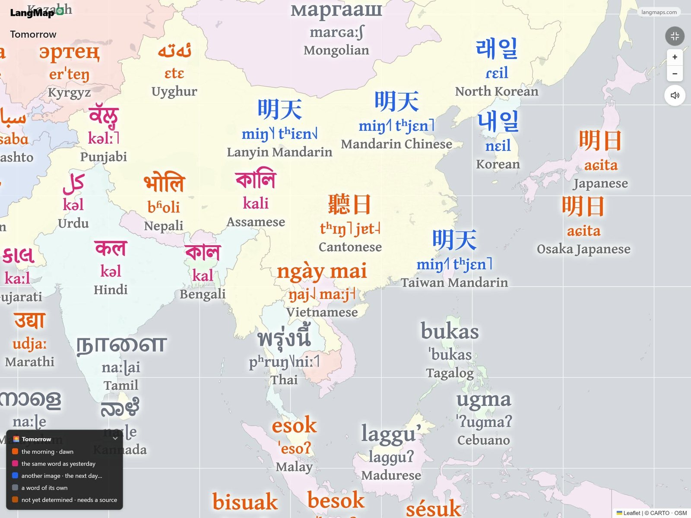

Yesterday and Tomorrow: What If They Were the Same Word?
- In Hindi, "yesterday" and "tomorrow" are exactly the same word.
- In Japanese, "tomorrow" once meant "morning." Surprisingly, English and several European languages did something similar.
- And in Korea, an ancient Chinese book preserves a forgotten native word for tomorrow.

Contents
Yesterday or tomorrow? Both!
In Hindi, one little word does something extraordinary:
कल (kal)
It means both yesterday and tomorrow.
How can anyone tell the difference?
The verb and the context.
वह कल आया था।
"He came yesterday."
वह कल आएगा।
"He will come tomorrow."
Same word. Opposite directions in time.
Urdu کل (kal), Bengali কাল (kal), and Punjabi ਕੱਲ੍ਹ (kallh) have similar expressions.
But perhaps the strangest thing is that many other languages also connect tomorrow with something very familiar.
Morning.
Tomorrow is just another morning
Look at these European languages:
Spanish: mañana = morning / tomorrow
German: morgen = morning / tomorrow
English: tomorrow = originally "on the next morning"
French: demain = from Latin de mane, "from morning"
Even the English word tomorrow hides an old word for morning.
And the same idea appears thousands of kilometers away.
In Japanese, 明日 (ashita) originally meant "morning," especially the morning after a night.
Over time, the next morning became the next day.
Vietnamese has ngày mai, "tomorrow."
Here, mai also has an older meaning connected with early morning.
Different languages. Different histories.
But the same simple idea: Tomorrow begins when the sun rises.
China and Korea: The day that comes
Chinese takes another approach.
In Mandarin:
明天 (míngtiān)
Or the more literary:
明日 (míngrì)
Japanese uses exactly the same characters:
明日 (ashita / asu)
But Korean usually says:
내일 (naeil)
Written in Chinese characters:
來日 / 来日
Literally, "the coming day."
And here is a curious contrast.
In Japanese, 来日 (rainichi) normally means "coming to Japan."
The same characters describe tomorrow in Korean and a visit to Japan in Japanese.
But Korean has another surprise.
Korea's forgotten tomorrow
Today's Korean 내일 is a Sino-Korean word.
So what did Koreans say before it became common?
A clue survives in an extraordinary book from the Song dynasty.
Around the early 12th century, the Chinese author Sun Mu (孫穆) recorded Korean vocabulary in Jilin Leishi (鷄林類事), using Chinese characters to represent Korean sounds.
For "tomorrow," the record gives:
明日曰轄載
"Tomorrow is called 轄載."
These characters were used to approximate the Korean pronunciation, not to express its meaning.
Scholars have proposed reconstructions such as 하제 (haje) and related forms, but the exact ancient pronunciation remains uncertain.
The native word eventually disappeared from ordinary speech.
Yet a Chinese book preserved a trace of Korea's forgotten tomorrow.
One sunrise, two directions
Now return to Hindi.
कल (kal)
Yesterday.
Tomorrow.
One word for the day on either side of today.
Other languages chose different paths.
Japanese found tomorrow in the morning.
English, German, Spanish, French, and Vietnamese also connected it with dawn.
Chinese spoke of the next day.
Korean spoke of the day that comes, while an older native word faded into history.
But Hindi kept something wonderfully unusual.
Yesterday and tomorrow are opposites only because we are standing between them.
Move one day forward, and tomorrow becomes today.
Move one day backward, and yesterday becomes today.
Perhaps time is not divided by the words we use. Perhaps the words simply reveal where we are standing.
Sources
- Sun Mu, Jilin Leishi 鷄林類事 (early 12th century)